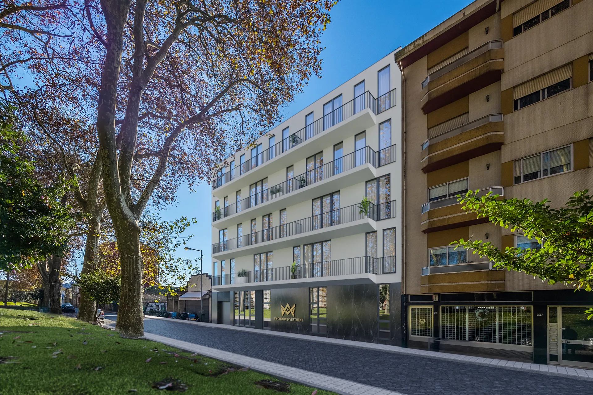

Real estate development in Porto
YK CROWN, LDA is a Portuguese real estate development company. We buy, design and build residential projects, working with independent architects and construction partners from the first sketch to the handover of keys.
From site to keys, under one company
We manage every stage of the development ourselves, so buyers deal with one responsible company from reservation to deed.
Site & planning
Selecting well-located plots and taking projects through municipal licensing.
Design
Working with architects and engineers on efficient layouts, natural light and high energy performance.
Construction
Managing the works, materials and quality control, with regular progress updates for buyers.
Sales & aftercare
Direct sales with no intermediaries, clear documentation and support after handover.
Energy efficiency
New buildings designed for energy class A+: lower running costs and better comfort.
Three languages
We work with Portuguese and international buyers in Portuguese, English and Chinese.

Praça da Corujeira, Porto
11 new apartments — T0, T1 and T2 — on a tree-lined square in Campanhã, each with a parking space and energy class A+. Delivery planned for February 2028.
What buyers can expect
Clear information
Areas from the approved architecture project, published for every apartment.
Regular updates
Construction progress is published on this website so buyers can follow the works.
One point of contact
Questions are answered directly by YK CROWN, by email, phone or WhatsApp.
Company details
YK CROWN, LDA
NIPC 514037555
Rua Fontes Pereira de Melo 22B
2720-233 Amadora, Portugal
info@ykcrown.com · +351 969 058 818

Talk to us
Ask for the price list or book a viewing of Praça da Corujeira.